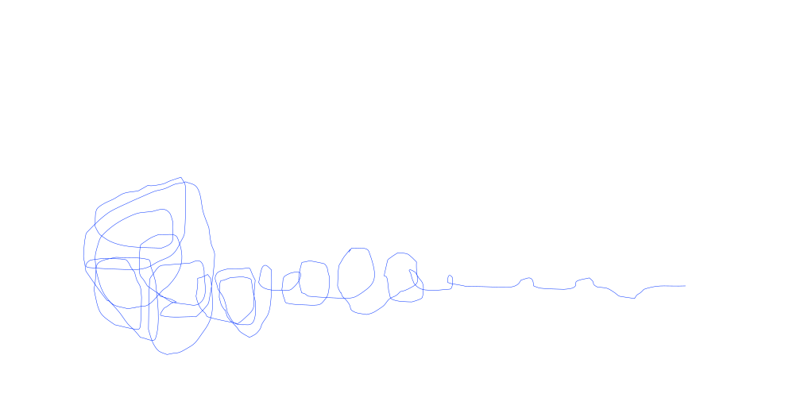
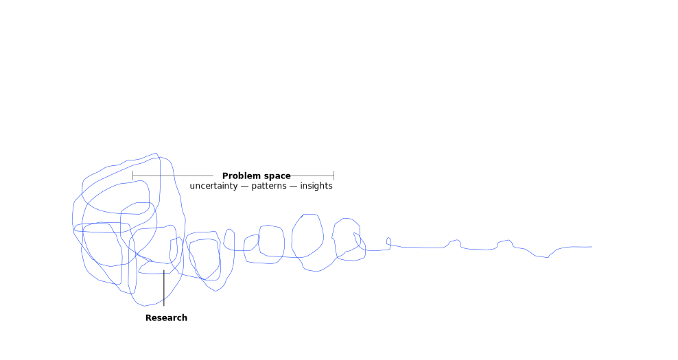
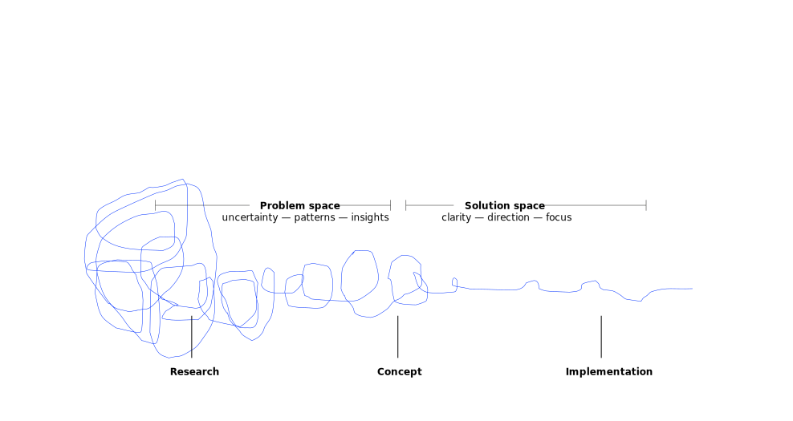
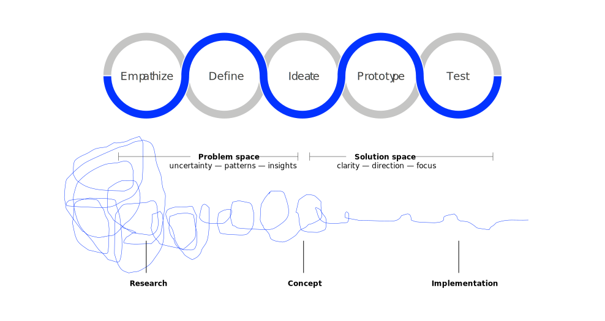

Business Value Creation with IT (BVC)
Neu-Ulm University of Applied Sciences
February 21, 2025
aesthetics
event
product
experience
Design is
a process …
… based on these mindsets.
Understand people in context — focus on how they do things and why, their physical and emotional needs, how they think about the world and what matters to them.
Focus on diversity — bring people with different backgrounds and experiences together to really understand a problem and evolve a solution.
Embrace experimentation — prototyping helps you learn and think — taking action on an idea to understand it better, validating it or gaining evidence of the right solution.
Illustrate your creative ideas — communicate your vision through the use of experiences, visuals and stories.
Allow the design thinking process to guide your actions from start to finish — always remember where you are in the design process, what you are hoping to accomplish and what you need to do next.
Design thinking is the way designers think: the mental processes they use to design objects, services or systems, as distinct from the end result of elegant and useful products (Dunne and Martin 2006).
Design thinking results from the nature of design work: an interdisciplinary and projectbased work flow around “wicked” problems (Dunne and Martin 2006).




Designers can imagine the world from multiple perspectives – those of colleagues, clients, end users, and customers (current and prospective) (Brown et al. 2008).
We want to guide innovation efforts, find out everything about our customer or user and understand their problem as well as uncover even latent needs and desires.
We can use Stakeholder Mapping and Why-How Laddering.
Stakeholder mapping is the process of identifying a system of parties involved and interested in a particular outcome or product and their relations to one another.
Stakeholder maps create a solid foundation for user-centered design as they
Start with a simple brainstorming and organize your results in a comprehensive map.
Why-how laddering is the process of fleshing out varying user needs and find a middle ground that’s both meaningful and actionable.
For each need, ladder up by asking why until you reach an abstract need. Climb back down the ladder asking how to address the need.
If I had one hour to solve a problem, I would spend the first fifty-five minutes thinking about the problem and five minutes thinking of the solutions.
Albert Einstein
We want to synthesize findings from the previous step, identify a specific and meaningful challenge to tackle, and create an actionable problem statement.
We can use Point of View (POV) Madlib or How Might We to reframe our findings into a problem statement that can guide the hole design process.
For further tools see bootcamp bootleg (Plattner 2010)
[USER] needs to [USER’S NEED] because [SURPRISING INSIGHT].
Use a whiteboard or scratch paper to try out a number of options, playing with each variable and the combinations of them.
The need and insight should flow from your unpacking and synthesis work.
For example, instead of “A teenage girl needs more nutritious food because vitamins are vital to good health” try “A teenage girl with a bleak outlook needs to feel more socially accepted when eating healthy food, because in her hood a social risks is more dangerous than a health risk.” (Plattner 2010)
How might me [ACTIONABLE PIECE] for [USER] in order to [NEED]?
The ideate phase represents a process of “going wide” in terms of concepts and outcomes — it is a mode of “flaring” rather than “focus.”
The goal of ideation is to explore a wide solution space both a large quantity of ideas and a diversity among those ideas (Plattner 2010).
We want to progress from defining problems to exploring solutions, spark creativity and innovation, move beyond the expected, and exploit the multiplicity of perspectives in your team.
We can use different brainstorming and brainwriting methods to create and evaluate ideas.
Visual brainstorming uses visualization as a tool to organize information, capturing ideas by using something like a mindmap.
We want to learn and eliminate ambiguity, fail quickly and cheaply by testing a number of ideas, refine solutions with users, and inspire others by showing your vision.
We can use multiple methods such as paper prototyping, physical prototyping, click-dummies or even tools like LCDP.
We put our ideas into the appropriate context to improve and understand the variables, evaluate and refine the idea, and receive constructive feedback
Methods such as pitch, lean startup, surveys (quantitative and qualitative), 4-quadrant test and many more are suitable for testing our ideas and prototypes.
Narrow down the problem space of your challenge
We spend a lot time designing the bridge, but not enough time thinking about the people who are crossing it. Dr. Prabhjot Singh, Director of Systems Design at the Earth Institute
If you can dream it,
you can do it. Walt Disney